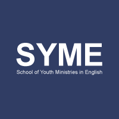
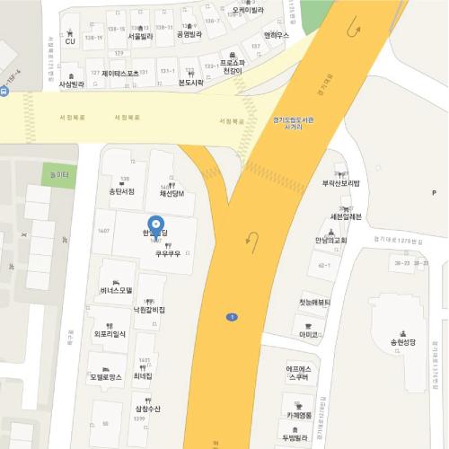

syme
syme
Q&A
-
SYME가 끝나면 주로 어떻게 되나요?
SYME를 졸업하거나 끝낸 학생들은 주로 월비로 유학을 가거나, 자신의 과를 영어와 접목시켜 취업을 하기도 합니다.
영어를 할 수 있는 사람들에게는 여러가지 유리한 점이 있어서 그 부분을 -
SYME는 언제부터 참여할 수 있나요?
매주 화요일 오전 7:30 부터 스케쥴이 진행이 되기 때문에
학생들은 전 날 월요일 저녁까지 와서 Devotion(모임) 참여하고 수업을 진행합니다.
학생은 입학 과정을 마치면 한 주의 첫 날 부터 참여 가능합니다. -
어떤 사람들이 SYME를 주로 누가 찾아오나요?
단순하게 영어 실력 향상을 원하는 사람부터 영적인 훈련 또는 회복이 필요한 사람도 찾아옵니다.
대학교 휴학생부터 대안학교를 졸업하거나 검정고시를 패스한 고등학생, 유학준비를 위한 학생들이 찾아옵니다. -
SYME의 궁극적인 목표는 무엇인가요?
SYME의 궁극적인 목표는 청년, 청소년에게 복음을 전해 제자삼는 것과 영어 실력 향상에 초점에 두고 있습니다.
영적인 성장, 제자 훈련, 영어 실력 향상이 저희의 목표입니다.
오시는 길

- 주소 | 경기 평택시 경기대로 1407 2층 월코센터
- 전화 | 031-611-9216
- 대중교통 | 1호선을 타고 송탄역 1번출구 방향에서 내려오셔서 택시를 이용
후원하기
더운지라 실현에 대한 자신과 용기가 있다 그러므로 그들은 이상의 보배를 능히 품으며
그들의 이상은 아름답고 소담스러운 열매를 맺어 우리 인생을 풍부하게 하는 것
-
SYME 학생 장학금 후원
농협 301-0278-8149-31
-
Ministry Center 후원
농협 301-0278-8220-71
-
선교사 후원금
농협 301-0278-8166-11